1. Cos'è Vivi Lama
Vivi Lama è la web app con i percorsi e i punti di interesse del territorio di Lama Mocogno, pensata per chi vuole camminare o pedalare sul territorio. Non serve installarla da nessuno store: si apre direttamente dal browser del telefono.
Puoi trovarla inquadrando il QR code sui pannelli informativi lungo i percorsi, oppure aprendo l'indirizzo 2.maphub.it dal browser.
Per un accesso più comodo, puoi aggiungere l'app alla schermata Home del telefono:
- iPhone (Safari): tocca l'icona di condivisione e scegli "Aggiungi a Home".
- Android (Chrome): apri il menu con i tre puntini e scegli "Aggiungi a schermata Home".
La stessa app, aperta da un computer, mostra un layout diverso a due colonne (elenco a sinistra, mappa a destra): questa guida descrive la versione da telefono, quella che userai davvero sul posto.
2. Come è fatta l'app
In basso trovi sempre tre voci: Home, Mappa e Profilo. Sono il modo principale per muoverti nell'app.
Quando apri un percorso o un punto di interesse, i contenuti si aprono in un pannello che scorre dal basso sopra la mappa. Se il pannello non si allunga muovendo la rotellina o scorrendo con un dito, trascina verso l'alto la barretta grigia che trovi in cima al pannello.
3. La Home: ricerca e raccolte
Aprendo l'app arrivi sulla Home, con il logo, la barra Cerca e le raccolte di percorsi disponibili.
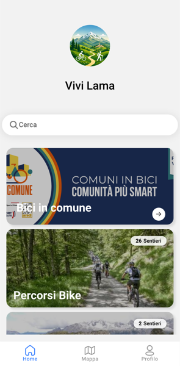
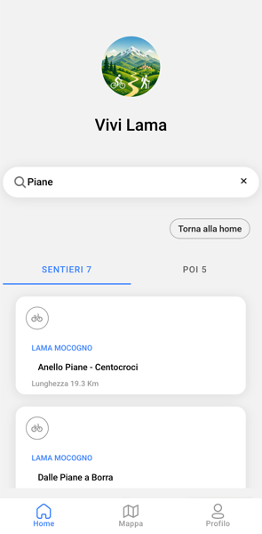
Puoi cercare un percorso o un punto di interesse per nome dalla barra Cerca: i risultati compaiono divisi in due schede, SENTIERI e POI, ciascuna con il numero di risultati trovati.
4. Le raccolte di percorsi
Nella Home i percorsi sono raggruppati in raccolte tematiche (ad esempio "Percorsi Bike"). Toccando una raccolta passi alla Mappa, con tutti i tracciati della raccolta evidenziati.
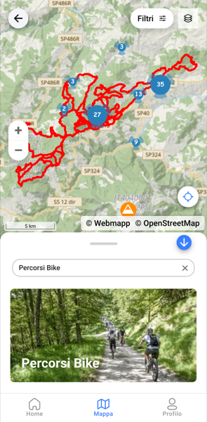
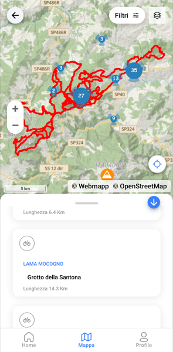
Trascinando verso l'alto la barretta in cima al pannello vedi l'elenco dei sentieri della raccolta, con il comune di partenza, il nome del percorso e la sua lunghezza.
5. La scheda di un percorso
Aprendo un percorso vedi il tracciato sulla mappa e, nel pannello in basso, i dati tecnici: distanza, durata stimata, dislivello, quota di partenza, minima e massima.
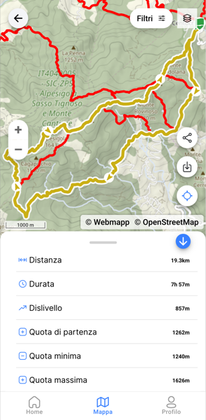
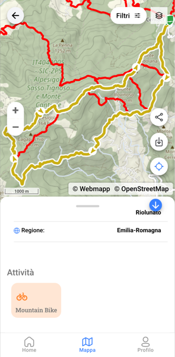
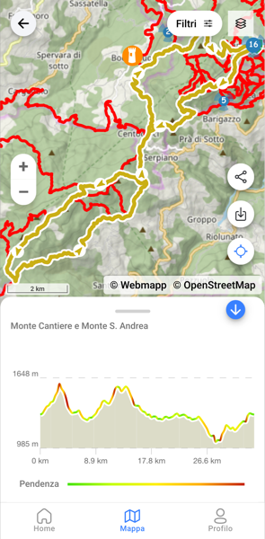
Scorrendo il pannello trovi anche a quale comune e regione appartiene il percorso, e a quale tipo di attività è adatto (ad esempio Mountain Bike).
Oltre ai dati tecnici, alcuni percorsi hanno anche una breve descrizione testuale: se è presente viene mostrata nella scheda, altrimenti non compare.
Sul bordo destro della mappa trovi tre pulsanti utili mentre guardi un percorso:
- Condividi (icona a rete): invia il link del percorso ad altri, ad esempio via WhatsApp o email.
- Scarica (freccia verso il basso): avvia il download del percorso per usarlo offline — vedi il capitolo "Usare l'app senza connessione".
- Posizione (mirino): centra la mappa sulla tua posizione attuale, utile per capire dove ti trovi rispetto al tracciato.
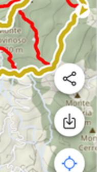
La prima volta che tocchi Posizione, il browser del telefono chiede il permesso di accedere alla tua posizione: tocca Consenti per continuare. Se concedi il permesso, un pallino blu mostra dove ti trovi sulla mappa, insieme a qualche pulsante aggiuntivo per gestire la visualizzazione (tra cui uno per chiuderla).
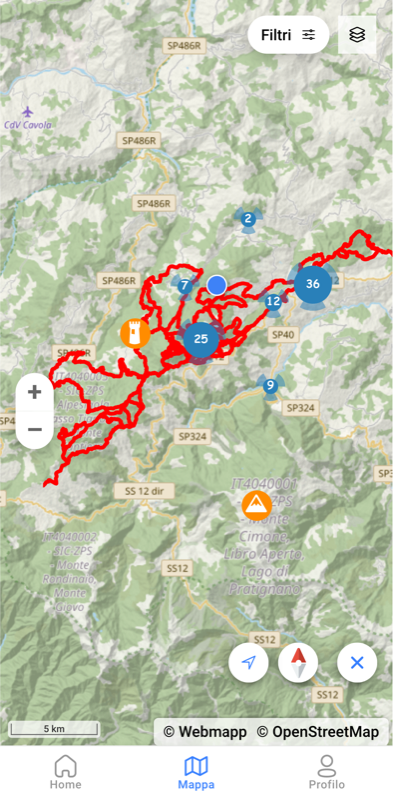
La localizzazione è disponibile solo da smartphone: se apri Vivi Lama da computer questa funzione non c'è.
Se non vedi il pallino blu, controlla di aver concesso il permesso di localizzazione al browser e che la localizzazione sia attiva nelle impostazioni del telefono — vedi anche le Domande frequenti.
6. I punti di interesse
Oltre ai percorsi, sulla mappa trovi anche i punti di interesse: fontane, punti panoramici, edifici storici e altri luoghi segnalati lungo il territorio, rappresentati da icone colorate. Quando più punti sono vicini tra loro, l'app li raggruppa in un cerchio numerato: toccandolo la mappa si avvicina e i punti si separano.
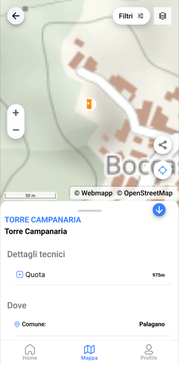
Toccando un'icona si apre la scheda del punto di interesse, con nome, dettagli tecnici (ad esempio la quota) e il comune in cui si trova.
7. La mappa: filtri e tipo di mappa
Filtrare i punti di interesse
In alto sulla mappa trovi il pulsante Filtri. Toccandolo e poi toccando la riga "Punti di interesse" si apre l'elenco delle categorie disponibili, ognuna con il numero di punti presenti (ad esempio Bar, B&B, Bancomat...).
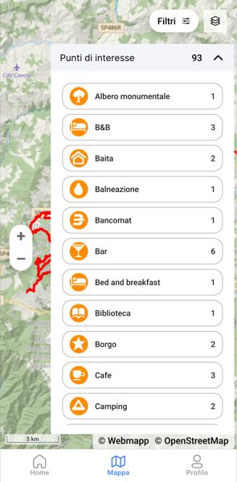
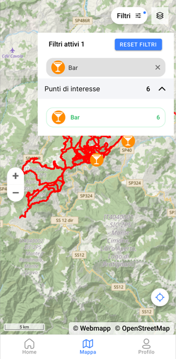
Toccando una categoria, la mappa mostra solo quel tipo di punti. In alto compare "Filtri attivi" con il numero di filtri applicati: puoi togliere un singolo filtro toccando la X sul suo tag, oppure toccare "RESET FILTRI" per rimuoverli tutti.
Cambiare tipo di mappa
Il pulsante con l'icona a strati, in alto a destra vicino a "Filtri", apre un pannello con due sezioni: Tipo mappa (per passare dalla mappa "Webmapp" alla vista Satellite) e Dati (per mostrare o nascondere i percorsi).
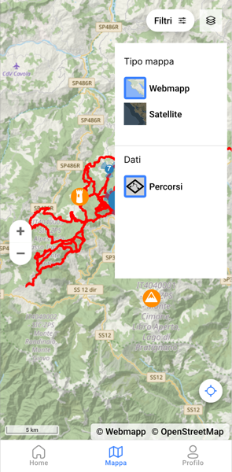
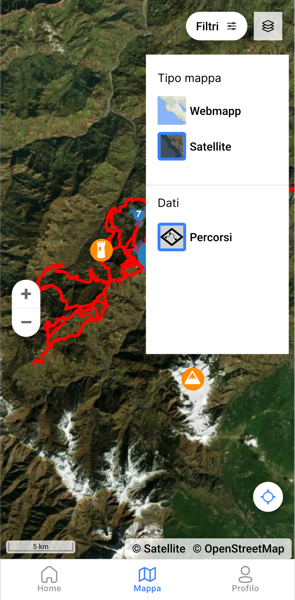
8. Usare l'app senza connessione
Se vai in zone senza campo o segnale, puoi scaricare un percorso in anticipo per continuare a usarlo offline.
Apri la scheda del percorso e tocca l'icona di download (la freccia verso il basso, tra le icone sulla destra della mappa). Vedrai una schermata con l'avanzamento del download della mappa e dei contenuti multimediali.
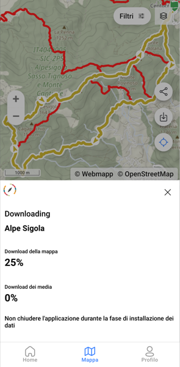
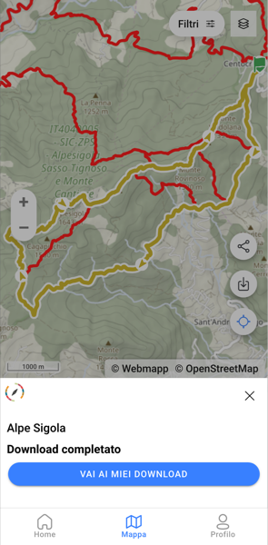
Da "VAI AI MIEI DOWNLOAD" (raggiungibile anche da Profilo → Downloads → Tracce scaricate) trovi l'elenco dei percorsi scaricati, con la lunghezza, lo spazio occupato e un pulsante ELIMINA per liberare spazio quando non ti servono più.
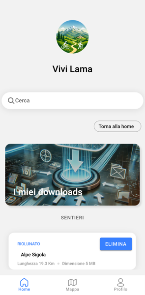
9. Profilo e impostazioni
Dalla voce Profilo in basso trovi la sezione "I tuoi dati", con i Downloads e le Tracce scaricate.
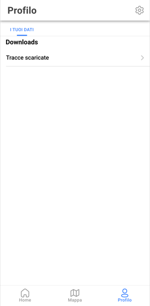
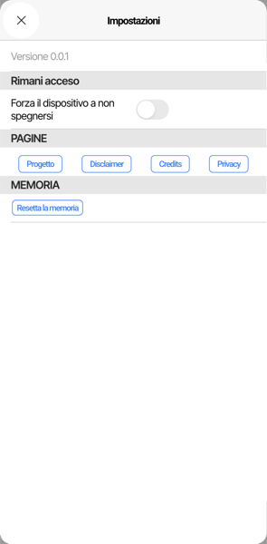
Toccando l'ingranaggio in alto a destra nel Profilo apri le Impostazioni, dove trovi la versione dell'app, l'opzione "Rimani acceso" (per impedire che lo schermo si spenga da solo durante l'uso), i link a Progetto, Disclaimer, Credits e Privacy, e la possibilità di "Resettare la memoria" dell'app.
"Rimani acceso" ha un interruttore, "Forza il dispositivo a non spegnersi": attivalo prima di metterti in cammino così lo schermo resta acceso mentre segui il percorso, senza che tu debba sbloccare il telefono di continuo (tieni presente che consuma più batteria).
Il pulsante "Resetta la memoria", nella sezione Memoria, cancella tutti i dati salvati localmente dall'app — comprese le tracce scaricate — liberando lo spazio occupato: è lo stesso strumento suggerito nelle Domande frequenti per liberare spazio quando i download sono troppi. Dopo averlo usato dovrai riscaricare i percorsi che vuoi continuare a usare offline.
10. Domande frequenti
- Devo registrarmi per usare l'app?
- No, puoi cercare percorsi, punti di interesse e scaricarli offline senza creare un account.
- L'app mi guida passo passo come un navigatore?
- No, Vivi Lama ti mostra il percorso sulla mappa con tutti i suoi dati, ma non offre indicazioni vocali o turn-by-turn come un navigatore per auto.
- Quanto sono affidabili i tempi di percorrenza indicati?
- Sono stime calcolate sul tracciato: il tempo reale dipende dal tuo passo, dalle condizioni del terreno e dalle soste che farai.
- Ho scaricato un percorso ma non lo trovo più: dove guardo?
- In Profilo → I tuoi dati → Downloads → Tracce scaricate trovi l'elenco completo di ciò che hai scaricato.
- La posizione sulla mappa non si aggiorna: cosa controllo?
- Verifica che l'app mobile abbia il permesso di accedere alla posizione del telefono e che la localizzazione (GPS) sia attiva nelle impostazioni del telefono. Ricorda che la geolocalizzazione funziona solo da smartphone: aprendo Vivi Lama da computer questa funzione non è disponibile.
- I download occupano troppo spazio: come li tolgo?
- Da "I miei downloads" tocca ELIMINA sul percorso che non ti serve più; per liberare tutto lo spazio usato dall'app puoi anche usare "Resetta la memoria" nelle Impostazioni.